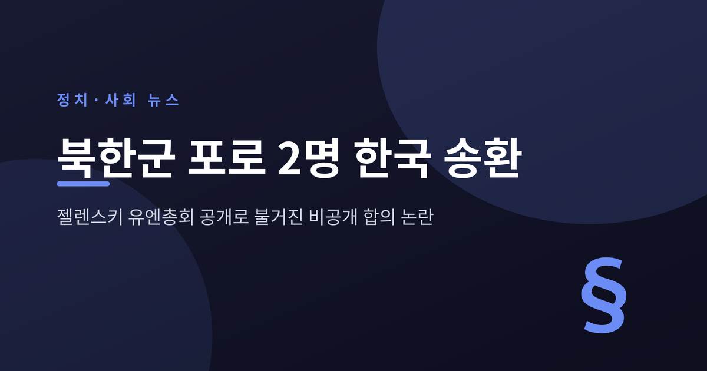
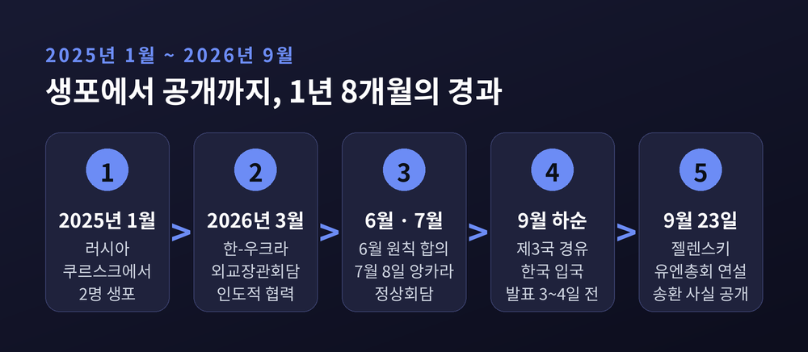
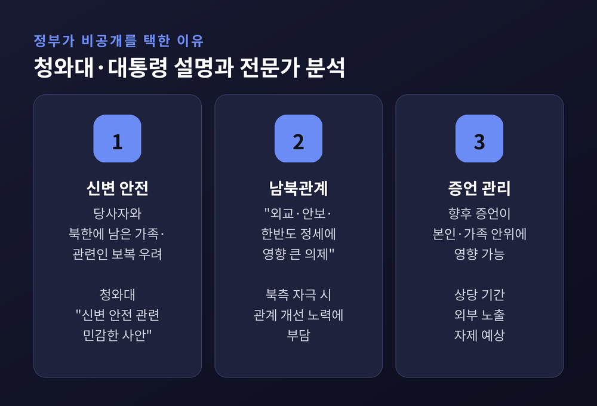
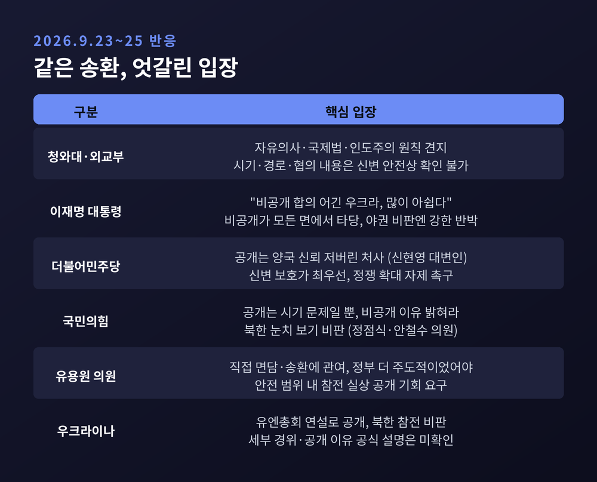
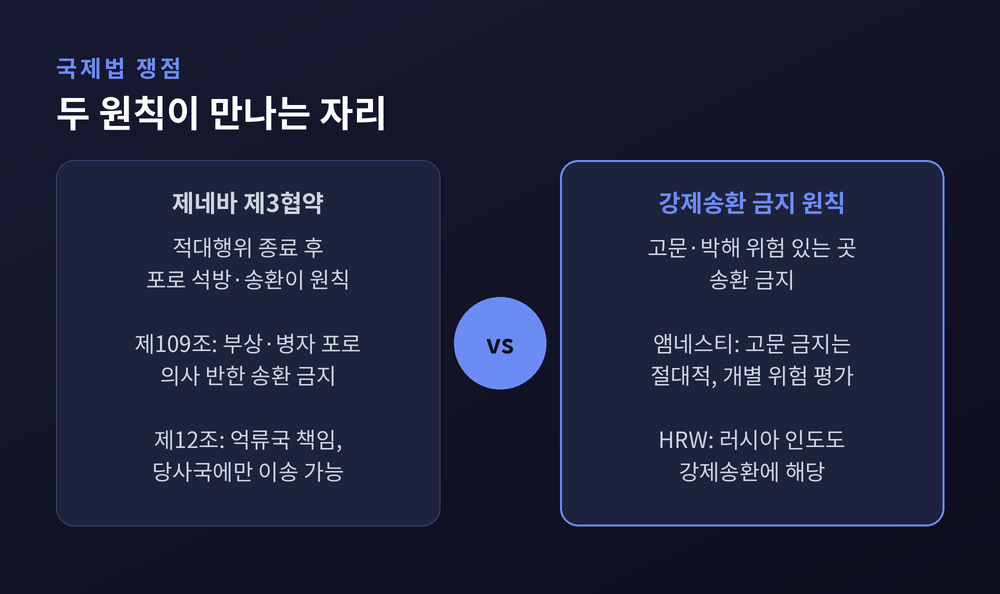
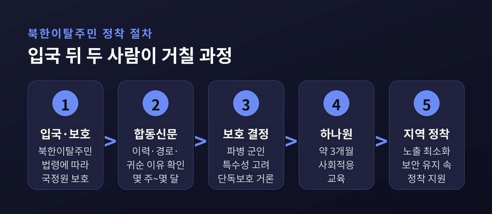
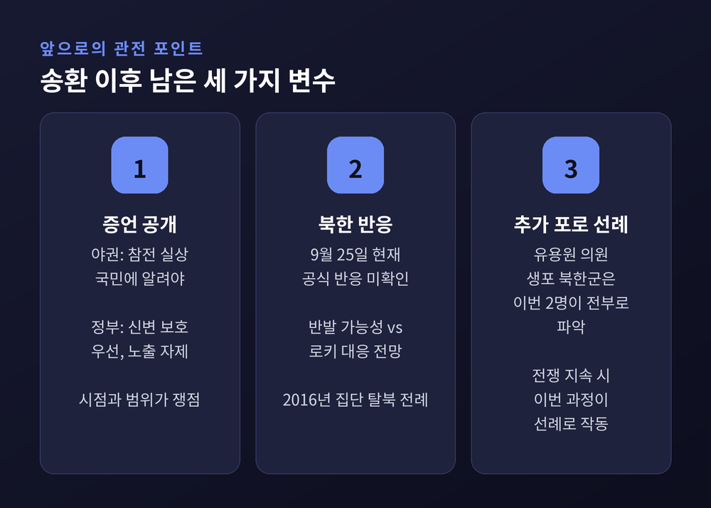

이번 글에서는 우크라이나군에 생포됐던 북한군 포로 2명의 한국 송환 소식을 정리해 보겠습니다. 송환 자체보다 더 큰 논란이 된 것은 '누가, 언제 이 사실을 알렸느냐'였습니다. 정부와 우크라이나, 여야와 전문가의 주장을 나란히 놓고 차례로 짚어 봅니다.
세 줄 요약
소식은 서울이 아니라 뉴욕에서 먼저 나왔습니다.
젤렌스키 대통령은 제81차 유엔총회 연설에서 두 포로의 한국행을 짧게 언급했습니다. 이들을 산 채로 붙잡기가 쉽지 않았고, 한 명은 붙잡힐 것을 알고 스스로 목숨을 끊으려 했다는 일화도 덧붙였습니다. 이어 김정은 위원장이 병사들을 "화폐처럼" 쓰고 대가를 받는다고 비판했습니다. 러시아가 47개국 출신 외국인을 용병으로 모집했다는 비판과 함께 나온 발언이었습니다.
송환 시점과 경로는 밝히지 않았습니다.
국민의힘 유용원 의원은 24일 국회 기자회견에서 두 사람이 발표 3~4일 전 입국했다고 전했습니다. 지난 주말 우크라이나를 떠나 제3국을 거쳤다는 설명입니다. 유 의원은 입국 사실을 미리 알았지만, 신변 안전과 외교 관계를 고려해 공개하지 않았다고 했습니다. 입국한 두 사람의 건강 상태는 양호한 것으로 전해졌습니다.

이번 송환은 하루아침에 이뤄진 일이 아닙니다.
두 사람은 2025년 1월 쿠르스크 지역에서 생포됐습니다. 북한군 파병 이후 처음 알려진 생포 사례였습니다. 이후 탈북민 단체에 보낸 자필 편지와 한국 언론 인터뷰를 통해 한국행 의사를 여러 차례 밝혔습니다.
처음부터 한국행이 정해져 있었던 것은 아닙니다. 젤렌스키 대통령은 2025년 초만 해도 이들을 러시아에 잡힌 우크라이나 포로와 맞바꾸는 방안을 거론했습니다. 인권단체들은 처벌 위험을 들어 한국으로 보내야 한다고 촉구했습니다.
협상의 흐름은 이렇게 정리됩니다.
뉴스1은 이를 두고 정부 물밑 협상의 "결실"이라고 표현했습니다.
청와대의 첫 반응은 신중했습니다.
24일 청와대는 자유의사 존중과 국제법·인도주의 원칙이라는 일관된 입장을 견지해 왔다고 밝혔습니다. 그러면서 당사자와 가족의 신변 안전과 관련된 민감한 사안이라 신병 처리 여부, 시기와 경로, 구체적 협의 내용은 확인하기 어렵다고 했습니다. 외교부도 같은 취지로 답했습니다. 사실상 송환을 인정하면서도 세부 사항은 말하지 않은 셈입니다.
이 대통령의 설명은 더 직접적이었습니다. 포로 송환은 "외교, 안보, 한반도 정세에 크게 영향을 미치는 매우 예민한 의제"라고 했습니다. 지지율 만회에 도움이 될 테니 공개하자는 내부 주장도 있었지만, 공개로 생길 문제를 고려해 비공개가 타당했고 우크라이나와도 그렇게 합의했다고 밝혔습니다.
비공개 사유로 거론되는 것은 크게 세 가지입니다.

우크라이나 정부의 공식 해명은 아직 확인되지 않습니다.
다만 외신 분석에서 몇 가지 배경을 엿볼 수 있습니다. 홍콩 사우스차이나모닝포스트(SCMP)는 이번 공개로 북한의 선전전이 곤경에 처했다고 봤습니다. 북한은 생포되느니 자결한 병사를 영웅으로 그려 왔습니다. 살아서 한국을 택한 병사의 존재는 그 서사와 정면으로 부딪힙니다. 북한군을 상대로 한 우크라이나의 심리전에 활용될 수 있다는 분석도 나옵니다.
유엔총회라는 무대도 의미가 있습니다. 북한의 참전과 러시아의 외국인 동원을 국제사회에 고발하려는 메시지 속에 송환 사실이 담겼습니다.
반대로, SCMP는 민감한 인도주의 사안을 정치적으로 활용했다는 비판을 받을 수 있다는 지적도 함께 전했습니다. 한국 입장에서는 합의를 믿고 조용히 움직였는데, 발표의 주도권을 상대에게 내준 모양이 됐습니다.
국내 정치권의 반응은 선명하게 갈렸습니다.

더불어민주당은 우크라이나의 공개를 비판했습니다. 신현영 대변인은 비공개 합의에도 송환 사실을 전 세계에 알린 것은 "양국 간 신뢰를 저버린 처사이자 국가안보 측면에서도 위험한 행동"이라고 했습니다. 가장 중요한 것은 두 사람의 신변 보호이며, 정부는 송환을 자화자찬하거나 정치적으로 이용할 생각이 없다고 강조했습니다. 국민의힘에는 정쟁 확대를 멈추라고 요구했습니다.
국민의힘은 비공개 결정 자체를 문제 삼았습니다. 정점식 원내대표는 공개는 시기의 문제일 뿐 맞는 일이라며, 정부가 김정은 위원장의 심기를 의식한 것 아니냐고 따졌습니다. 안철수 의원은 국민이 이 소식을 왜 우크라이나 대통령의 연설로 들어야 하느냐고 물었습니다. 김용태 의원은 대통령이 젤렌스키를 향해 불편한 심기를 드러낸 것을 비판했습니다.
유용원 의원의 결은 조금 다릅니다. 2025년 2월 우크라이나 현지에서 포로들을 직접 만났던 그는 "가슴 벅찬 감회"를 밝혔습니다. 다만 헌법상 우리 국민인 이들을 보호하는 주체로서 정부가 더 주도적이었어야 한다고 지적했습니다. 안전이 보장되는 범위에서 참전 실상을 국민에게 알릴 기회도 요구했습니다. 국민의힘 내부에서도 온도차가 있다는 보도가 나온 배경입니다.
무소속 한동훈 의원은 정부의 안보 기준이 북한 정권의 기분에 맞춰져 있다고 비판했습니다.
이에 이 대통령은 X에서 이례적으로 강한 표현을 썼습니다. 성과를 생색내려 생명과 국익·안보를 해치는 사람을 "살인자나 매국노"라 부른다고 반박했습니다. 야권의 문제 제기에 정면으로 맞선 것입니다. 이 발언의 수위를 두고도 평가가 갈릴 수 있습니다.
법적으로 보면 이 사안은 두 원칙이 만나는 지점에 있습니다.
첫째는 제네바 제3협약입니다. 원칙적으로 포로는 적대행위가 끝나면 석방·송환됩니다. 제109조는 부상자나 병자인 포로를 적대행위 중 본인 의사에 반해 송환해서는 안 된다고 정합니다. 제12조는 억류국이 포로 처우의 최종 책임을 지고, 협약 당사국에만, 그 나라의 협약 이행 의사와 능력을 확인한 뒤에 이송할 수 있다고 규정합니다.
둘째는 강제송환 금지 원칙입니다. 고문이나 비인도적 대우의 위험이 있는 곳으로 누구도 돌려보내서는 안 된다는 원칙입니다. 국제앰네스티는 고문 금지가 절대적이며 우크라이나가 개별 위험을 평가할 의무가 있다고 VOA에 밝혔습니다. 휴먼라이츠워치는 2014년 유엔 북한인권조사위원회가 강제송환자에 대한 고문·처형 등을 기록했다며, 북한에 넘겨질 것을 알면서 러시아에 인도하는 것도 강제송환이라고 봤습니다.
예전에는 전쟁포로 문제를 주로 교환과 송환의 틀로 다뤘습니다. 지금은 본인의 의사와 박해 위험이 먼저 따져야 할 기준이 되고 있습니다. 한국전쟁 정전협상 때 거제도 포로의 송환 거부 문제와 같은 성격이라는 해석도 있습니다.
한국 정부는 북한군 포로도 헌법상 대한민국 국민이며, 자유의사가 확인되면 보호하고 지원한다는 입장을 밝혀 왔습니다.

러시아는 거리를 두는 모습입니다. 드미트리 페스코프 크렘린궁 대변인은 이 사안에 관해 어떤 정보도 갖고 있지 않다고 했습니다. 포로 문제는 국방부와 정보기관 소관이며, 정보기관 차원의 접촉은 계속된다고 덧붙였습니다.
북한의 공식 반응은 25일 현재 확인되지 않습니다. 전망은 두 갈래입니다.
한쪽은 반발 가능성입니다. 2016년 중국 내 북한식당 종업원 집단 탈북 때 북한은 한국 정부의 '유인·납치'를 주장하며 송환을 요구했습니다. 군인의 귀순은 체제 동요로 읽힐 수 있어 더 민감하다는 분석도 있습니다.
다른 쪽은 조용한 대응입니다. 박원곤 이화여대 교수는 한국 정부가 절제된 기조를 유지하면 남북관계에 큰 영향이 없고, 북한이 노동신문 등에 이를 공개할 가능성도 작다고 봤습니다. 차두현 아산정책연구원 부원장은 북한이 문제를 키울수록 참전 사실만 다시 떠오르게 된다고 짚었습니다.
북한이 가장 꺼릴 대목은 증언입니다. 파병 병력의 선발 과정, 자발성, 전투 환경, 러시아군 내 처우에 관한 이야기가 북한의 선전과 다를 경우 부담이 될 수 있습니다. 파병 규모는 약 1만5000명(AP 인용 한·우 추정)이라는 보도와 2만5000여 명이라는 관측이 엇갈립니다.
두 사람은 북한이탈주민 관련 법령에 따라 국가정보원의 보호를 받습니다.
일반적인 탈북민은 입국 후 정부 합동신문을 거칩니다. 북한에서의 이력, 이동 경로, 귀순 이유 등을 확인하는 절차로 몇 주에서 몇 달이 걸립니다. 이후 하나원에서 약 3개월간 사회적응교육을 받고 지역에 정착합니다.
이번 경우는 파병 군인 출신이라는 특수성이 있습니다. 국정원 단독보호 대상이 될 가능성이 거론되고, 동선이 드러나지 않도록 보안이 유지될 것으로 보입니다. 한 가지 짚어 둘 점도 있습니다. 두 사람의 한국행 의사는 우크라이나 수용시설 안에서 밝혀진 것이라, 입국 뒤 자유의사를 다시 확인하는 절차 역시 중요하다는 지적입니다.

이번 일로 양국 사이에 불편함이 생긴 것은 분명합니다. 대통령이 직접 "아쉽다"고 했고, 여당은 신뢰 훼손을 말했습니다. 그렇다고 관계를 흔들 수준의 대응으로 보이지는 않습니다. 이 대통령은 전쟁의 조기 종식을 기원하는 문장으로 글을 맺었습니다. 3월 외교장관회담에서 9월 송환까지 이어진 협력의 성과도 남아 있습니다.
한러관계에 미칠 영향도 당장은 크지 않을 것이라는 관측이 많습니다. 무기 지원과 달리 포로의 한국행 자체는 러시아가 크게 문제 삼기 어렵다는 분석입니다.
앞으로 지켜볼 것은 세 가지입니다.

끝으로 한 가지만 덧붙이겠습니다.
이번 논란은 공개냐 비공개냐의 싸움처럼 보입니다. 공개를 주장하는 쪽은 국민의 알 권리와 정부의 주도성을, 비공개를 지지하는 쪽은 생명과 외교적 신뢰를 앞세웁니다. 두 논리 모두 나름의 무게가 있습니다. 다만 그 사이에 실제 사람이 서 있다는 사실은 달라지지 않습니다. 전문가들이 정치적 파장과 별개로 인도주의 원칙에 따라 판단해야 한다고 입을 모은 이유도 여기에 있습니다.
"누가 먼저 말했느냐보다, 두 사람이 무사히 새 삶을 시작할 수 있느냐가 먼저다."
이 일을 어떻게 기억해야 하느냐고 물으신다면, 논쟁의 승패보다 두 사람의 안전으로 기억하고 싶다고 답하겠습니다.